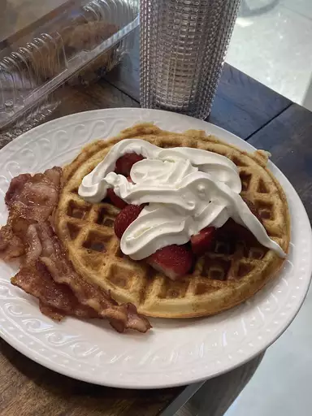

waffles

hearth waffles
Wake up on the right side of the bed with this top-rated waffle recipe.
ingrediants
- Eggs
- Flour
- Milk
- Oil
- Sugar
- Baking powder
- Salt
- Vanilla
steps
- Whisk the eggs, then add the flour, milk, and oil. Whisk in the sugar. Stir in the remaining ingredients.
- Pour the batter onto the hot, prepared waffle iron.
Cook until golden brown and repeat with the remaining batter.